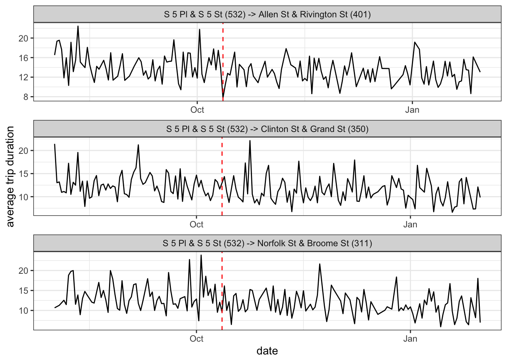

The other day, I hopped on a Citi Bike for the first time in a few months and was surprised – and a little frightened – to discover that I’d mounted an e-bike. When had Citi Bike rolled out the electric counterpart to their more familiar, human-powered model?
According to a recent New York Times article, Citi Bike “introduced e-bikes in 2018, but removed them in 2019 after reports of brakes malfunctioning, causing rider injuries,” before phasing them back in early last year.
But that’s not the whole story. A Twitter bot that publishes live bike availability numbers tweeted out that there were 813 available e-bikes on September 9th, a high watermark at the time:
There are 813 docked ebikes right now. That's the most seen so far.https://t.co/8kUZ9KxVuf
— CitiBike Stats (@CitiBikeStats) September 9, 2020
Then the account went radio silent until mid-December when it started reporting e-bike availability numbers that were almost three times higher:
There are 13338 bikes right now. 2303 of them are electric.
— CitiBike Stats (@CitiBikeStats) December 15, 2020
So, presumably, during this period Citi Bike added thousands of e-bikes to their fleet. Perhaps this was a gradual increase, but if there had been a single injection of e-bikes, or at least a primary one, would we be able to figure out when?
Well, e-bikes go faster, if you hadn’t heard, so maybe there was some sort of signature in the ridership data, which Citi Bike thankfully publishes, that showed bikers going faster after a certain date. In other words, we might expect the average duration between stations to tick down once a greater proportion of the riding population was sitting on top of a motor.
It’s not worth my time or my laptop’s processor to sift through the millions of rides that comprise months’ worth of Citi Bike data. Instead, let’s choose a particularly difficult set of routes that we’d suspect would be made much easier with the boost of an e-bike. From experience, I can tell you that ascending the first half of the Williamsburg Bridge as you cross over from Brooklyn to Manhattan is a brutal, uphill push that I wouldn’t wish upon an unassisted rider.
And so we have our goal: examine the various routes that we know crossed that bridge and see if their average duration dipped at some point in our suspected window. This exercise would qualify as change point detection.
Don’t like/know/care about R? Click here to skip to the results.
We need both ride and station data, both of which Citi Bike provides.
library(tidyverse)
library(rstan)
library(ggmap)
library(lubridate)
library(patchwork)
options(mc.cores = 4)# download trip files from https://s3.amazonaws.com/tripdata/index.html
trips_files <- paste0(rep(2020:2021, c(5, 1)),
str_pad(c(8:12, 1), 2, "left", 0),
"-citibike-tripdata.csv")
trips <- map(trips_files, ~read_csv(.x)) %>%
bind_rows() %>%
as_tibble(.name_repair = "universal")
# read in station info as well
stations_json <- jsonlite::read_json('https://feeds.citibikenyc.com/stations/stations.json')
stations <- bind_rows(map(stations_json$stationBeanList, ~unlist(.x))) %>%
mutate_at(c('id', 'latitude', 'longitude'), as.numeric)We can then identify our stations of interest, which will be within close proximity of either end of the Williamsburg Bridge:
# station ids for those close to bridge on Brooklyn side
stations_wburg <- c(3104, 3103, 3101, 3096, 3098, 3092, 3093, 3090, 3091, 2002,
539, 3085, 3088, 3087, 3084, 460, 481, 471, 3082, 3079, 389,
282, 2005, 443, 532, 3078, 3080, 3075, 3073, 3071, 3069, 3072,
3065, 3066, 3079, 3077, 3089)
# station ids for those close to bridge on Manhattan side
stations_mnhtn <- c(2009, 408, 331, 340, 291, 502, 332, 308, 296, 295, 307, 350,
356, 263, 412, 361, 311, 263, 531, 342, 341, 400, 410, 401, 473,
265, 312, 302, 150, 301, 393, 411, 266, 339, 394, 317, 432, 445,
511, 433, 326, 438, 236, 300, 439, 403, 428, 300, 335, 229, 375,
161, 250, 251, 151, 303)
map <- get_map(c(left = -74.000,
bottom = 40.695,
right = -73.945,
top = 40.730))
ggmap(map) +
geom_point(data = stations %>%
filter(id %in% c(stations_wburg, stations_mnhtn)),
aes(x = longitude, y = latitude, fill = id %in% stations_wburg),
col = "black", pch = 21, size = 3, alpha = 0.7) +
theme(axis.title = element_blank(),
axis.text = element_blank(),
axis.ticks = element_blank(),
legend.position = "none")For each unique route between a starting station in Brooklyn and an ending one in Manhattan, we take the daily mean tripduration, although we throw away rides longer than a half hour in an effort to weed out bikers who might be meandering through a scenic trip instead of making a mostly direct path between stations.
We also index our dates and our routes, since we will need a way to keep track of them once we begin modeling.
trips_agg <- trips %>%
filter(start.station.id %in% stations_wburg,
end.station.id %in% stations_mnhtn,
# filter out unreasonably long trips
tripduration < 30*60) %>%
group_by(date = date(starttime),
start.station.id, start.station.name,
end.station.id, end.station.name) %>%
summarize(trips = n(),
mean_duration = mean(tripduration)/60) %>%
ungroup() %>%
arrange(date) %>%
# index dates and routes
mutate(date_idx = as.numeric(as.factor(date)),
route = paste0(start.station.name, " (", start.station.id, ") -> ",
end.station.name, " (", end.station.id, ")")) %>%
mutate(route_idx = as.numeric(factor(route, levels = unique(.$route)))) %>%
arrange(date_idx, route_idx)
# assign chunks of data to each date
date_idx <- trips_agg %>%
mutate(rn = row_number()) %>%
group_by(date_idx) %>%
summarize(first = min(rn),
last = max(rn))This is what our final dataset looks like, with each row providing the number of trips and mean trip duration for a single route on a particular day:
trips_agg %>%
filter(trips > 2) %>%
group_by(route_idx) %>%
sample_n(1) %>%
ungroup() %>%
sample_n(5) %>%
select(date, date_idx, start.station.name, end.station.name, route_idx, trips, mean_duration) %>%
knitr::kable()| date | date_idx | start.station.name | end.station.name | route_idx | trips | mean_duration |
|---|---|---|---|---|---|---|
| 2020-09-05 | 36 | Roebling St & N 4 St | E 7 St & Avenue A | 315 | 3 | 20.87778 |
| 2020-11-11 | 103 | Grand St & Havemeyer St | Forsyth St & Canal St | 331 | 3 | 24.45000 |
| 2020-09-27 | 58 | S 5 Pl & S 5 St | Stanton St & Chrystie St | 51 | 3 | 15.66111 |
| 2020-11-10 | 102 | Union Ave & N 12 St | Allen St & Hester St | 566 | 3 | 20.68889 |
| 2020-08-02 | 2 | Roebling St & N 4 St | E 5 St & Avenue C | 191 | 3 | 22.04444 |
N, the number of rows (or unique route-date combinations)
N_routes, the number of unique routes
N_days, the number of unique dates
mean_duration, the mean trip duration for each route-date
trips, the number of trips for each route-date
route, the route for each route-date
We also provide the first and last row in the data of each date to allow us to access observations based on their date. This workaround is necessary because logical indexing isn’t possible (by default) in Stan, so I can’t simply write something like mean_durations[date == 1] that is commonplace in R:
data {
int<lower = 1> N; // data size
int<lower = 1> N_routes; // number of unique routes
int<lower = 1> N_days; // number of unique dates
// assigning chunks of data to each day
int<lower = 1, upper = N> day_first_idx [N_days];
int<lower = 1, upper = N> day_last_idx [N_days];
// duration, sample size, and route index for each observation
vector [N] mean_duration;
vector [N] trips;
int<lower = 1, upper = N_routes> route [N];
}We assume trips are normally distributed and seek to estimate the mean (\(\mu_1, \mu_2\)) and spread (\(\sigma_1, \sigma_2\)) of this distribution both before and after the theoretical change-point. We also know that different routes will have varying times around this “grand” trip mean, so we allow for a “random effect” in \(Z\) for each route (with a scale \(\sigma_Z\) that also must be estimated):
parameters {
// average trip length before/after change
real mu1;
real mu2;
// trip standard deviation before/after change
real<lower = 0> sigma1;
real<lower = 0> sigma2;
// random effects by route
vector[N_routes] Z;
real<lower = 0> sigma_Z;
}Of course, what we’re really after here is the date that the change occurred. But Stan doesn’t allow for direct estimation of latent discrete parameters, so we have to marginalize this parameter out of the posterior. By that, I mean that we can only sample from \(P(Y, \mu, \sigma)\) and not \(P(Y, d, \mu, \sigma)\), so we need a way to get from the latter to the former. Here I’m using \(Y\) as our observed mean trip durations and \(d\) as the latent change-point date, while momentarily ignoring the random effect parameters \(Z\) and \(\sigma_Z\) for simplicity.
How do we go about that? Well the chain rule of probability says that we can break the joint distribution into a marginal distribution and a conditional distribution, as shown in the first line below. From there, we can express the conditional as a sum over all the possible values of \(d\) (line 2) and then once again split that joint distribution into a marginal and a conditional (line 3):
\[
\begin{aligned}
P(Y, \mu, \sigma)&= P(\mu, \sigma) \times P(Y|\mu, \sigma)\\
&= P(\mu, \sigma) \times \sum_{d \in D} P(Y, d|\mu, \sigma)\\
&= P(\mu, \sigma) \times \sum_{d \in D} P(d)P(Y|\mu, \sigma,d)\\
\end{aligned}
\]
That first term, \(P(\mu, \sigma)\), will already be addressed in the model block, so we use the transformed parameters block to also calculate lp, or the log of the term \(P(d)P(Y|\mu, \sigma,d)\) for each possible date. Note that each element is initialized as -log(N_days), which implies that our prior for any single date being the change-point is 1/N_days, or a uniform distribution over the available possibilities.
mean_duration_ctr
transformed parameters {
// initialize each log probability with uniform distribution
vector[N_days] lp = rep_vector(-log(N_days), N_days);
// center the observed means at grand mean by removing random effects
vector [N] mean_duration_ctr = mean_duration - Z[route];
// loop over each possible change-point
for (cp in 1:N_days){
// calculate log probability for each date
for (d in 1:N_days){
// find rows associated with date
int start = day_first_idx[d];
int end = day_last_idx[d];
// mean/scale dependent on whether change-point has passed
real mu = d < cp ? mu1 : mu2;
real sigma = d < cp ? sigma1 : sigma2;
// add density of observed daily means to log probability
lp[cp] = lp[cp] + normal_lpdf(mean_duration_ctr[start:end]| mu, sigma ./ sqrt(trips[start:end]));
}
}
}Except…this is unnecessarily slow. We’re actually constantly re-computing values we already know. Think about moving the change-point back one day–we should really only be figuring out the new probability of our data at that change-point, not calculating the density again for all the surrounding days whose distributions are unaffected.
So instead we turn to a dynamic programming solution demonstrated in the Stan manual. The key here is to create two vectors, lp_pre and lp_post, that hold the cumulative probability at all days under each condition (i.e. \(\mu_1, \sigma_1\) vs. \(\mu_2, \sigma_2\)). Then, to simulate the change-point occurring at each day, we combine the cumulative probability under the first condition up until that day (head(lp_pre, N_days)) with the cumulative probability under the second condition after that day (lp_post[N_days + 1] - head(lp_post, N_days)):
transformed parameters {
// initialize each log probability with uniform distribution
vector[N_days] lp = rep_vector(-log(N_days), N_days);
// center the observed means at grand mean by removing random effects
vector [N] mean_duration_ctr = mean_duration - Z[route];
// vectors to hold log probability under each scenario
vector[N_days + 1] lp_pre;
vector[N_days + 1] lp_post;
lp_pre[1] = 0;
lp_post[1] = 0;
// calculate log probability for each date
for (d in 1:N_days) {
// find rows associated with date
int start = day_first_idx[d];
int end = day_last_idx[d];
// add density of observed daily means to both log probabilities
lp_pre[d + 1] = lp_pre[d] + normal_lpdf(mean_duration_ctr[start:end] | mu1, sigma1 ./ sqrt(trips[start:end]));
lp_post[d + 1] = lp_post[d] + normal_lpdf(mean_duration_ctr[start:end] | mu2, sigma2 ./ sqrt(trips[start:end]));
}
lp = lp +
head(lp_pre, N_days) + //log probability up until each possible change-point
(lp_post[N_days + 1] - head(lp_post, N_days)); //log probability after each possible change-point
}We put somewhat informative priors on our parameters in our model block, since we have an idea of how long it should take to bike over the bridge, and make sure to add lp to our target – the equivalent of including the \(\sum_{d \in D} P(Y, d|\mu, \sigma)\) term in the breakdown of our posterior from above.
model {
// would expect rides to be around 15 minutes
mu1 ~ normal(15, 5);
mu2 ~ normal(15, 5);
// half-normal prior on scale terms
sigma1 ~ normal(0, 5);
sigma2 ~ normal(0, 5);
// tighter half-normal prior on random effects
sigma_Z ~ normal(0, 3);
Z ~ normal(0, sigma_Z);
// include marginalized latent parameter in posterior
target += log_sum_exp(lp);
} And finally, in order to get posterior samples of the change-point, we need to create them in the generated quantities block since we’re not sampling them directly in the model block:
generated quantities {
// sample change points from posterior simplex
int<lower = 1, upper = N> cp_sim = categorical_rng(softmax(lp));
}We can now fit this model. It takes a few minutes (with chains run in parallel), but without the dynamic programming workaround it would be intractable.
fit <- stan("/Users/walkerharrison/Downloads/Bikez/bike_CPD.stan",
data = list(
N = nrow(trips_agg),
N_routes = max(trips_agg$route_idx),
N_days = max(trips_agg$date_idx),
day_first_idx = date_idx$first,
day_last_idx = date_idx$last,
mean_duration = trips_agg$mean_duration,
trips = trips_agg$trips,
route = trips_agg$route_idx
)
)The top row shows the posterior distribution of the mean and standard deviation of the rides before (blue) and after (red) the supposed change point. It appears that rides got about two minutes shorter at one point, which is consistent with what we might expect from an e-bike rollout.
As for the actual timing of the change point, we see that the log probability peaks at October 12th and that posterior samples are extremely concentrated on this date. In fact, I’m a little suspicious in the confidence of this model in a single date, although I don’t have much experience with this type of analysis so my fear might not be warranted.
(Graphing code is hidden but it’s available in original .Rmd)
We also can see the random effects in action by comparing the average durations by route with their respective parameter estimates. In general there’s a clean one-to-one relationship, but we can also see the effect of varying sample sizes as routes with little data get regressed more while those with lots of rides “earn” more extreme intercepts.
So why did the model pick October 12th? It’s not really plausible to grasp the varying influences of thousands of routes, but we can pick a select few that illustrate the concept. Below are three popular trips that (if you squint), all saw slight downticks in their mean ride duration around the date in question:

This of course is just a best guess. It’s more likely that e-bikes were released gradually and that (if there was an effect), it happened over time and not on a single date. But change point models are a neat concept that require some creative programming. And who knows…maybe CitiBike really did just flood New York with e-bikes on October 12th and was just waiting for a curious data blogger to reveal their strategy.